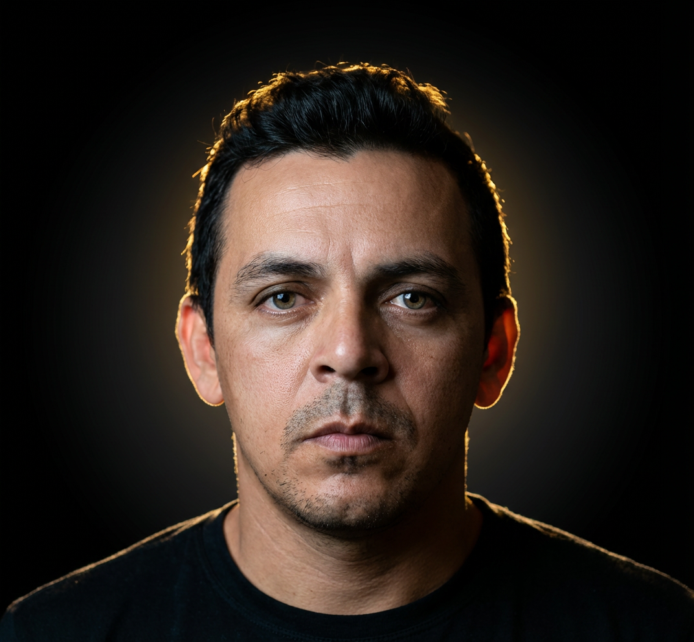

Estudante de Ciência da Computação (FAM), em transição para a área de Desenvolvimento de Software. Experiência prática com desenvolvimento de jogos e páginas web, aplicando lógica de programação, estruturação de código e construção de interfaces responsivas com Acessibilidade Web. Conhecimentos em desenvolvimento de sistemas e manutenção de software, aplicando boas práticas de programação, orientação a objetos (POO) e conceitos de engenharia de software. Experiência com interpretação de documentação técnica e desenvolvimento orientado a tarefas. Conhecimentos em linguagens como HTML5, CSS3, JavaScript, TypeScript, Python e SQL; frameworks e bibliotecas como React, Bootstrap, NodeJS, Angular e JQuery; e ferramentas como GitHub para versionamento de código (Git), pela Alura (Grupo Caelum). Vivência profissional com sistemas corporativos, banco de dados, ERP, Power BI e integração com Java/SQL. Noções de testes unitários, testes de integração e desenvolvimento de interfaces gráficas (UI). Perfil analítico, orientado a dados, com forte capacidade de aprendizado contínuo, trabalho em equipe e atenção a detalhes. Inglês técnico para leitura de documentação.
MDias Branco - CE
2025 - 2026Coca-Cola Andina - RJ
2015 - 2021Ciências da Computação
2022 - 2027
Front-End
2022
Inglês Intermediário
Espanhol Básico